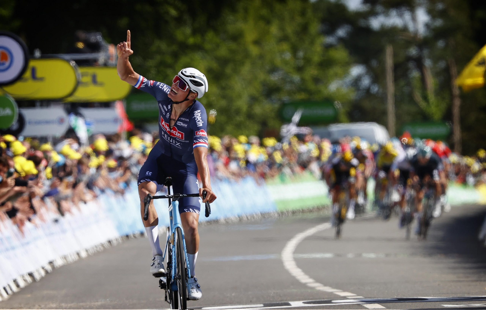

Mathieu van der Poel
Meer info over Matieu van der Poel
Hier zie je Mathieu van der Poel die de 2 rit van de tour de france 2021 wint. Alaphilippe won de eerste rit en nam het geel. Mathieu won rit 2 en pakte geel omdat hij op de eerste keer Mûr-de-Bretagne als eerste boven kwam en bonificatie seconden nam en de tweede keer (de aankomst) ook omdat hij won.
palmares
Giro d'Italia | Stage 1 2022-05-06
Ronde van Vlaanderen | 2022-04-03
Dwars door Vlaanderen | 2022-03-30
Settimana Internazionale Coppi e Bartali | Stage 4 2022-03-25
Antwerp Port Epic | 2021-09-12
Tour de France | Stage 2 2021-06-27
Tour de Suisse | Stage 3 2021-06-08
Tour de Suisse | Stage 2 2021-06-07
Tirreno-Adriatico | Stage 5 2021-03-14
Tirreno-Adriatico | Stage 3 2021-03-12
Strade Bianche | 2021-03-06
UAE Tour | Stage 1 2021-02-21
Ronde van Vlaanderen | 2020-10-18
BinckBank Tour | 2020-10-03
BinckBank Tour | Stage 5 2020-10-03
Tirreno-Adriatico | Stage 7 2020-09-13
National Championships Netherlands | Road Race 2019-08-23
Tour of Britain | 2019-09-14
Tour of Britain | Stage 8 2019-09-14
Tour of Britain | Stage 7 2019-09-13
Tour of Britain | Stage 4 2019-09-10
Arctic Race of Norway | Stage 1 2019-08-15
Amstel Gold Race | 2019-04-21
De Brabantse Pijl | 2019-04-17
Circuit Cycliste Sarthe | Stage 1 2019-04-09
Dwars door Vlaanderen | 2019-04-03
Grand Prix de Denain | 2019-03-24
Arctic Race of Norway | Stage 4 2018-08-19
Arctic Race of Norway | Stage 1 2018-08-16
National Championships Netherlands | Road Race 2018-07-01
Ronde van Limburg | 2018-06-10
Boucles de la Mayenne | 2018-06-03
Boucles de la Mayenne | Stage 1 2018-06-01
Dwars door het Hageland | Aarschot 2017-08-05
Boucles de la Mayenn | 2017-06-04
Boucles de la Mayenne | Stage 3 2017-06-04
Boucles de la Mayenne | Stage 2017-06-03
Baloise Belgium Tour | Stage 2 2017-05-25
Ronde van Limburg | 2014-06-15